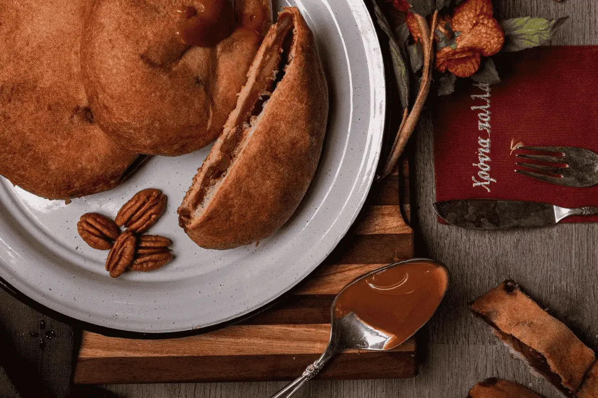
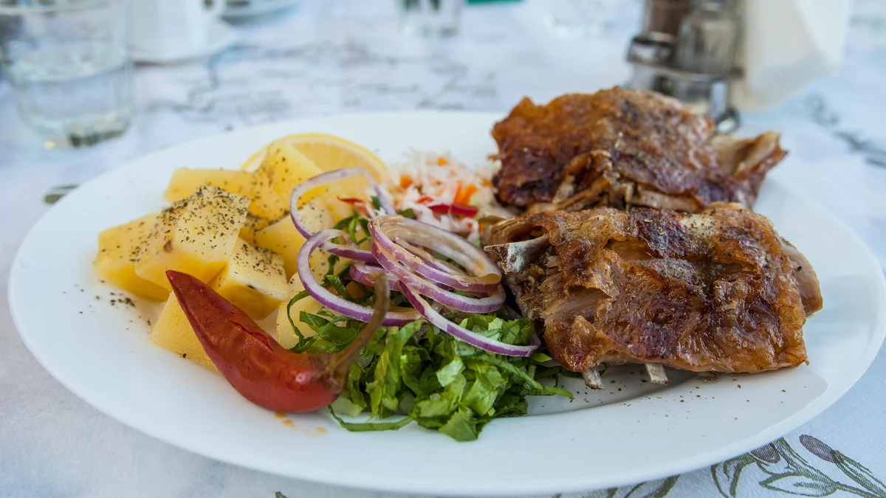
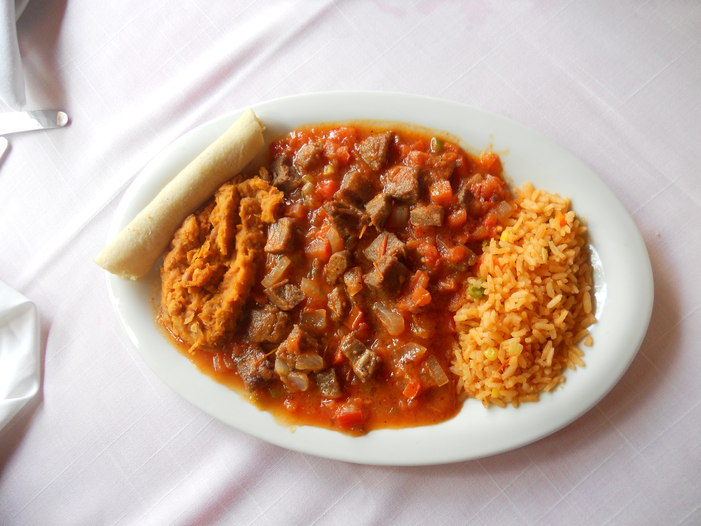
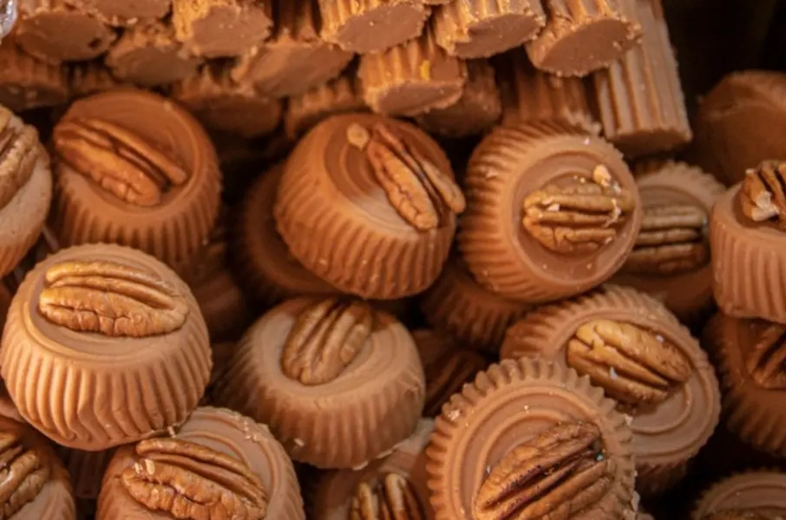

Platillos Típicos de Saltillo
| Sabores Tradicionales | |
|---|---|
El Pan de PulqueUn pan doradito, increíblemente esponjoso y con ese toque dulce de piloncillo y nuez que se deshace en la boca al primer mordisco.  |
Cabrito al PastorCarne tierna y jugosa cocinada lentamente a la leña, con una piel crujiente y ese sabor ahumado que te obliga a morder directo al hueso.  |
Cortadillo NorteñoCubos de res súper suaves nadando en un caldillo espeso de jitomate y chile, perfectos para armar un taco con una tortilla de harina calientita.  |
Dulces de Leche con NuezEl bocado perfecto de leche quemada artesanal, densa y cremosa, combinada con el toque crujiente de la mejor nuez de la región.  |